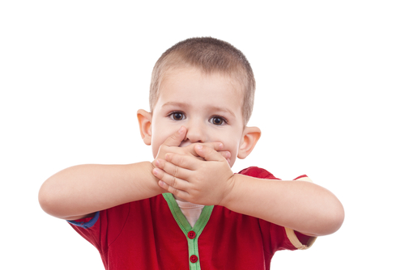
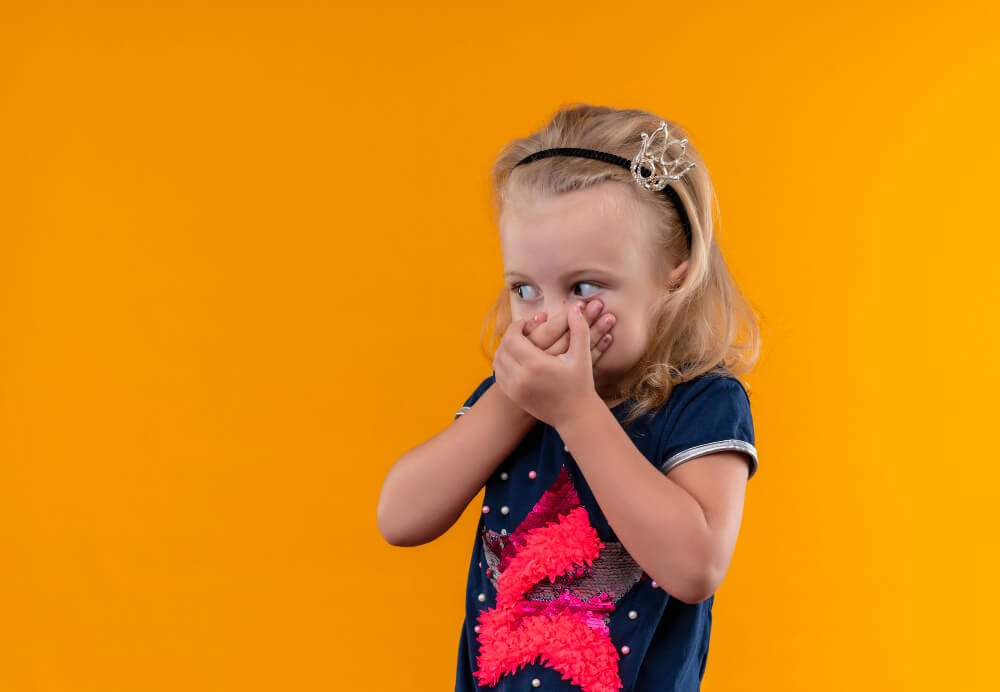
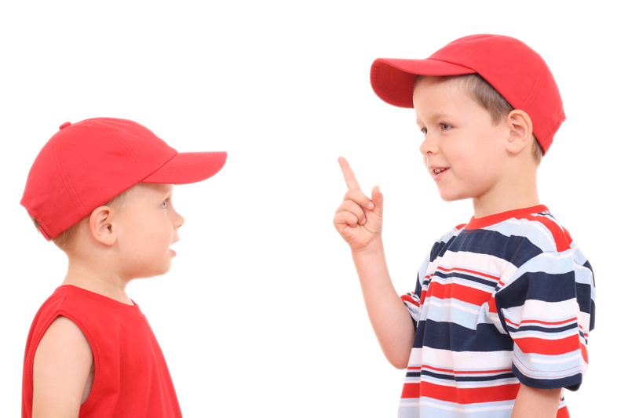

“Los chicos que no hablaban” es un cuento de la escritora española Ana María Matute. El cuento trata sobre la discriminación y la injusticia social hacia los pobres.

La historia se desarrolla en una aldea donde viven los hijos de un preso. Los niños son marginados por los demás niños de la aldea debido a su origen y su apariencia.

El cuento se centra en la relación entre los niños de la aldea y los hijos del preso, y cómo los niños de la aldea aprenden a aceptar a los otros niños a pesar de sus diferencias.

La narradora del cuento es una niña que describe a los niños de la aldea como crueles y despiadados con los hijos del preso. Los niños de la aldea les lanzan piedras y los insultan, y los hijos del preso responden con violencia.
Sin embargo, la narradora se da cuenta de que los niños de la aldea no son malos, sino que simplemente no entienden a los hijos del preso. Con el tiempo, los niños de la aldea aprenden a aceptar a los hijos del preso y a tratarlos con respeto.